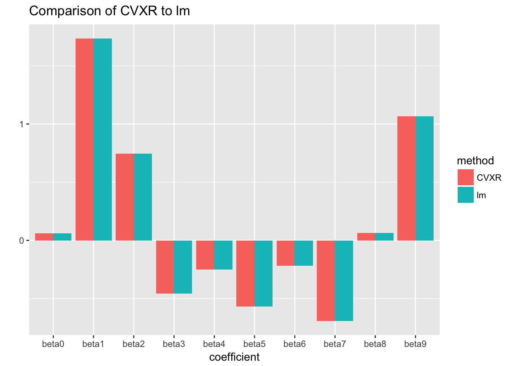
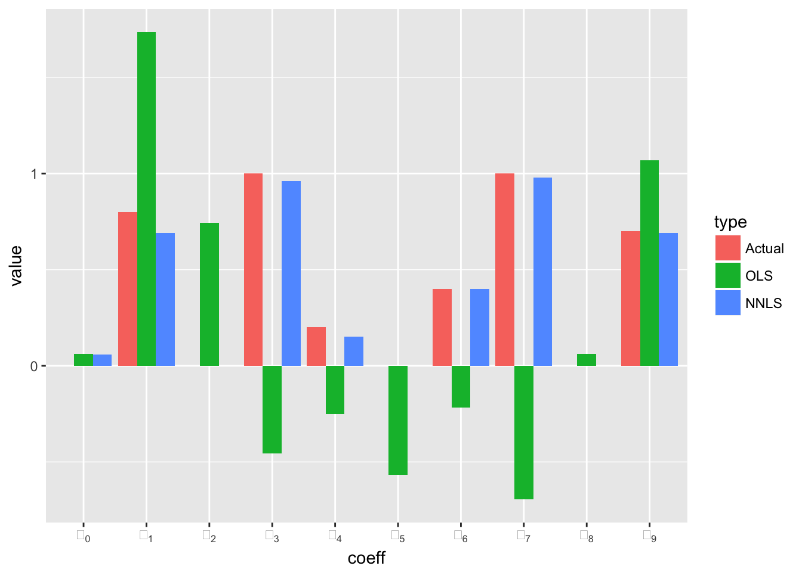
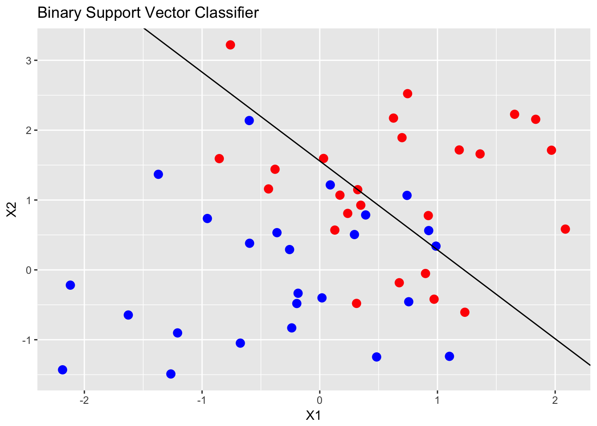

A Gentle Introduction to `cvxr`
Welcome to cvxr: a modeling language for describing and solving convex optimization problems that follows the natural, mathematical notation of convex optimization rather than the requirements of any particular solver. The purpose of this document is both to introduce the reader to cvxr and to generate excitement its possibilities in the field of statistics.
Convex optimization is a powerful and very general tool. As a practical matter, the set of convex optimization problems includes almost every optimization problem that can be solved exactly and efficiently (i.e. without requiring an exhaustive search). If an optimization problem can be solved, it is probably convex. This family of problems becomes even larger if you include those that can be solved approximately and efficiently. To learn more about the mathematics and application of convex optimization, see Boyd and Vandenberghe 2009.
Convex optimization systems written in other languages are already widely used in practical applications. These include YALMIP and CVX (Matlab), CVXPY (Python), and Convex.jl (Julia). cvxr Shares a lot of its code base with CVXcannon and CVXPY. As far as we know, this is the first full-featured general convex optimization package for R.
One of the great headaches of conventional numerical optimization is the process of deciding which algorithm to use and how to set its parameters. In convex optimization, the particular algorithm matters much less. So while a user of cvxr is still free to choose from a number of different algorithms and to set algorithm parameters as they please, the vast majority of users will not need to do this. cvxr will just work.
The uses for convex optimization in statistics are many and varied. Many parameter-fitting methods are convex, including least-squares, ridge, lasso, and isotonic regression, as well as many other kinds of problems such as maximum entropy or minimum Kullback-Leibler divergence over a finite set.
All of these examples, at least in their most basic forms, are established enough that they already have well-crafted R packages devoted to them. If you use cvxr to solve these problems, it will work. It will probably be slower than a custom-built algorithm—for example glmnet for fitting lasso or ridge regression models—but it will work. However, this is not the true purpose of cvxr. If you want to build a well-established model, you should use one of the well-established packages for doing so. If you want to build your own model—one that is a refinement of an existing method, or perhaps even something that has never been tried before—then cvxr is the place to do it. The advantage of cvxr over glmnet and the like comes from its flexibility: A few lines of code can transform a problem from commonplace to state-of-the-art, and can often do the work of an entire package in the process. (We present an example in section 3 where this is literally the case.)
This document is meant to be a complete introduction to the cvxr package. It assumes basic knowledge of convex optimization and statistics as well as proficiency with R. A potential user of cvxr should read all of it, but especially sections 2 and 4. Section 5 can be skimmed and then used as a reference when necessary. The sections may be summarized as follows:
Section 2: Thoroughly describes the most important aspects of
cvxrfor a new user to get started with a simple example.
Section 3: Presents a sequence of more sophisticated examples which are meant to illustrate the ease with which
cvxrcan handle a diverse set of problems.
Section 4: While the family of convex optimization problems is very large, it nonetheless has severe limitations which you must understand in order to be an effective user of
cvxr. This section lays out these limitations and how they are handled through a system called Disciplined Convex Programming (DCP).
Section 5: Presents the complete set of functions that have been implemented in
cvxrso far along with some of their most essential properties.
Happy optimizing!
2 Convex Optimization
A convex optimization problem has the following form:
\[ \begin{array}{ll} \mbox{minimize} & f_0(x)\\ \mbox{subject to} & f_i(x) \leq 0, \quad i=1,\ldots,m\\ & g_i(x) = 0, \quad i=1,\ldots,p \end{array} \]
where \(x\) is the variable, \(f_0\) and \(f_1,...,f_m\) are convex and \(g_1,...,g_p\) are affine. \(f_0\) is called the objective function, \(f_i \leq 0\) are called the inequality constraints, and \(g_i = 0\) are called the equality constraints.
In CVXR, you will specify convex optimization problems in a more convenient format than the one above.
A convex function is one that is upward curving. A concave function is downward curving. An affine function is flat, and is thus both convex and concave.
A convex optimization problem is one that attempts to minimize a convex function (or maximize a concave function) over a convex set of input points.
You can learn much more about convex optimization via Boyd and Vandenberghe (2004) as well as the CVX101 MOOC.
3 ‘Hello World’
We begin with one of the simplest possible problems that presents all three of these features:
\[ \begin{array}{ll} \mbox{minimize} & x^2 + y^2 \\ \mbox{subject to} & x \geq 0, \quad 2x + y = 1 \end{array} \]
with scalar variables \(x\) and \(y\). This is a convex optimization problem with objective \(f_0(x,y) = x^2 + y^2\) and constraint functions \(f_1(x,y) = -x\) and \(g_1(x,y) = 2x - y - 1\).
Note that this problem is simple enough to be solved analytically, so we can confirm that cvxr has produced the correct answer. Here’s how we formulate the problem in cvxr.
# Variables minimized over
x <- Variable(1)
y <- Variable(1)
# Problem definition
objective <- Minimize(x^2 + y^2)
constraints <- list(x >= 0, 2*x + y == 1)
prob2.1 <- Problem(objective, constraints)
# Problem solution
solution2.1 <- solve(prob2.1)
solution2.1$status## [1] "optimal"solution2.1$value## [1] 0.2solution2.1$getValue(x)## [1] 0.3999978solution2.1$getValue(y)## [1] 0.2000044# The world says 'hi' back.We now turn to a careful explanation of the code. The first lines create two Variable objects, x and y, both of length 1 (i.e. scalar variables).
x <- Variable(1)
y <- Variable(1)x and y represent what we are allowed to adjust in our problem in order to obtain the optimal solution. They don’t have values yet, and they won’t until after we solve the problem. For now, they are just placeholders.
Next, we define the problem objective.
objective <- Minimize(x^2 + y^2)This call to Minimize() does not return the minimum value of the expression x^2 + y^2 the way a call to the native R function min() would do (after all, x and y don’t have values yet). Instead, Minimize() creates an Objective object, which defines the goal of the optimization we will perform, namely to find values for x and y which produce the smallest possible value of x^2 + y^2.
The next line defines two constraints—an inequality constraint and an equality constraint, respectively.
constraints <- list(x >= 0, 2*x + y == 1)Again, counter to what you might ordinarily expect, the expression x >= 0 does not return TRUE or FALSE the way 1.3 >= 0 would. Instead, the == and >= operators have been overloaded to return Constraint objects which will be used by the solver to enforce the problem’s constraints. (Without them, the solution to our problem would simply be \(x = y = 0\).)
Next, we define our Problem object, which takes our Objective object and our two Constraint objects as inputs.
prob2.1 <- Problem(objective, constraints)Problem objects are very flexible in that they can have 0 or more Constraints, and their Objective can be to Minimize() a convex expression (as shown above) or to Maximize() a concave expression. You can even create a Problem object with no Objective, in which case the corresponding problem is called a “feasibility problem,” where the implicit objective is simply to find out whether or not it is possible to simultaneously satisfy all of the given constraints.
The call to Problem() still does not actually solve our optimization problem. That only happens with the call to Solve().
solution2.1 <- solve(prob2.1)Behind the scenes, this call translates the problem into a format that a convex solver can understand, feeds the problem to the solver, and then returns the results to a Solution object. For this problem, the Solution object will contain among other things the optimal value of the objective function x^2 + y^2, values for x and y that achieve that optimal objective value, and some accompanying metadata such as solution2.1$status, which confirms that the solution was indeed "optimal".
solution2.1$status## [1] "optimal"solution2.1$value## [1] 0.2solution2.1$getValue(x)## [1] 0.3999978solution2.1$getValue(y)## [1] 0.2000044In general when you apply the solve() method to a Problem, several things can happen:
solution$status == "optimal": The problem is solved. Values for the optimization variables are found which satisfy all of the constraints and minimize the objective.solution$status == "infeasible": The problem was not solved because no combination of input variables exists that can satisfy all of the constraints. For a trivial example of when this might happen, consider a problem with optimization variablex, and constraintsx >= 1andx <= 0. Obviously, no value ofxexists that can satisfy both constraints. In this case,solution$opt.valis+Inffor a minimization problem and-Inffor a maximization problem, indicating infinite dissatisfaction with the result. No values are returned for the input variables.solution$status == "unbounded": The problem was not solved because the Objective can be made arbitrarily small for a minimization problem or arbitrarily large for a maximization problem. Hence there is no optimal solution because for any given solution it is always possible to find something even more optimal. In this case,solution$opt.valis-Inffor a minimization problem and+Inffor a maximization problem, indicating infinite satisfaction with the result. Again, no values are returned for the input variables.
2.2 Modifying a CVXR Problem
Like any normal R object, the Problem, Objective, Constraint, and Solution objects can all be modified and computed upon after creation. Here is an example where we modify the problem we created above by changing its objective and adding a constraint, print the modified problem, check whether it is still convex, and then solve the modified problem:
# Modify the problem from example 1
prob2.2 <- prob2.1
prob2.2@objective <- Minimize(x^2 + y^2 + abs(x-y))
prob2.2@constraints <- c(prob2.2@constraints, y <= 1)
# Solve the modified problem
solution2.2 <- solve(prob2.2)
# Examine the solution
solution2.2$status## [1] "optimal"solution2.2$value## [1] 0.2222222solution2.2$getValue(x)## [1] 0.3333333solution2.2$getValue(y)## [1] 0.33333332.3 An Invalid Problem
Unfortunately, you can’t just type any arbitrary problem you like into cvxr. There are severe restrictions on what kinds of problems can be handled. For example, if we tried to `Maximize()’ the objective from example 2.1, we get an error:
prob2.3 <- prob2.1
prob2.3@objective <- Maximize(x^2 + y^2)
solve(prob2.3)## Error in cvxr::psolve(a, b, ...): Problem does not follow DCP rules.We would get a similar error if we tried to add the constraint norm2(x) == 1. This is because cvxr uses a strict set of rules called Disciplined Convex Programming (DCP) to evaluate the convexity of any given problem. If you follow these rules, you are guaranteed that your problem is convex. If you don’t follow these rules, cvxr will throw an exception. See section 5 for a complete description of DCP.
3 Introductory Examples
We begin by showing what a standard linear regression problem looks like in cvxr:
3.1 Ordinary Least Squares
For illustration, we generate some synthetic data for use in this example.
##
## Attaching package: 'MASS'## The following object is masked from 'package:cvxr':
##
## huberbeta <- Variable(m)
objective <- Minimize(sum_squares(y - X %*% beta))
prob3.1 <- Problem(objective)Here, y is the response, X is the matrix of predictors, n is the number of observations, and beta is a vector of coefficients on the predictors. The Ordinary Least-Squares (OLS) solution for beta minimizes 1/n times the the \(l_2\)-norm of the residuals (i.e. the root-mean-squared error). As we can see below, cvxr’s solution matches the solution obtained by using lm.
CVXR_solution3.1 <- solve(prob3.1)
lm_solution3.1 <- lm(y ~ 0 + X)
Obviously, if all you want to do is least-squares linear regression, you should simply use lm. The chief advantage of cvxr is its flexibility, as we will demonstrate with the rest of section 3.
3.2 Non-Negative Least Squares
Looking at Example 3.1, you may notice that the OLS regression problem has an objective, but no constraints. In many contexts, we can greatly improve our model by constraining the solution to reflect our prior knowledge. For example, we may know that the coefficients beta must be non-negative.
prob3.2 <- prob3.1
prob3.2@constraints <- list(beta >= 0)
solution3.2 <- solve(prob3.2)
As we can see in the figure above, adding that one constraint produced a massive improvement in the accuracy of the estimates. Not only are the non-negative least-squares estimates much closer to the true signal than the OLS estimates, they have even managed to recover the correct sparsity structure in this case.
Like with OLS, there are already R packages available which implement non-negative least squares, such as the package nnls. But that is actually an excellent demonstration of the power of cvxr: A single line of code here, namely prob3.2$constraints <- list(beta >= 0), is doing the work of an entire package.
3.3 Support Vector Classifiers
Another common statistical tool is the support vector classifier (SVC). The SVC is an affine function (hyperplane) that separates two sets of points by the widest margin. When the sets are not linearly separable, the SVC is determined by a trade-off between the width of the margin and the number of points that are misclassified.
For the binary case, where the response \(y_i \in \{-1,1\}\), the SVC is obtained by solving
\[ \begin{array}{ll} \mbox{minimize} & \frac{1}{2}\Vert\beta\Vert^2 + C\sum_{i=1}^m \xi_i \\ \mbox{subject to} & \xi_i \geq 0, \quad y_i(x_i^T\beta + \beta_0) \geq 1 - \xi_i, \quad i = 1,\ldots,m \end{array} \]
with variables \((\beta,\xi)\). Here, \(\xi\) is the amount by which a point can violate the separating hyperplane, and \(C > 0\) is a user-chosen penalty on the total violation. As \(C\) increases, fewer misclassifications will be allowed.
Below, we fit a SVC in cvxr with \(C = 10\).
## Generate data
set.seed(10)
n <- 2
m <- 50
X <- matrix(rnorm(m*n), nrow = m, ncol = n)
y <- c(rep(-1, m/2), rep(1, m/2))
X[y == 1,] = X[y == 1,] + 1## Define variables
cost <- 10
beta0 <- Variable()
beta <- Variable(n)
slack <- Variable(m)
# Form problem
objective <- (1/2) * sum_squares(vstack(beta, beta0)) + cost * sum(slack)
constraints <- list(y * (X %*% beta + beta0) >= 1 - slack, slack >= 0)
prob3.3 <- Problem(Minimize(objective), constraints)
solution3.3 <- solve(prob3.3)
4 Disciplined Convex Programming (DCP)
Disciplined convex programming (DCP) is a system for constructing mathematical expressions with known curvature from a given library of base functions. cvxr uses DCP to ensure that the specified optimization problems are convex.
You may also find it helpful to read about the DCP rules are applied in other languages such as Python, Matlab, and Julia.
cvxr implements the same rules.
5. DCP functions
The set of DCP functions are described in Function Reference.
References
Boyd, S., and L. Vandenberghe. 2004. Convex Optimization. Cambridge University Press.